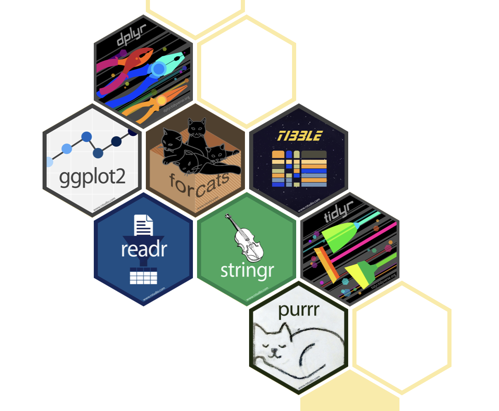
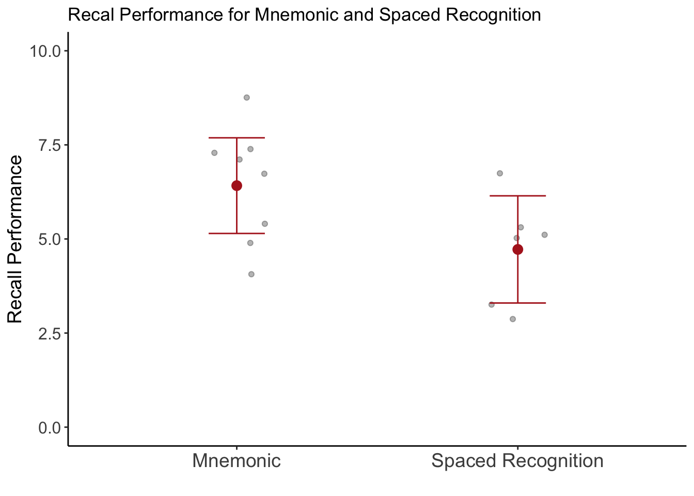

data <- data.frame(x = c(1,6,4,3,7,5,8,4),
y = c(2,3,2,1,4,6,4,3))
y_mean <- mean(data$y)Class 3: Data Transformation
We will cover the basics of data transformation in this class.
This is The Way
Although you will be learning R in this class, it might be more appropriate to say that you are learning the tidyverse.

The tidyverse is a set of packages that share an underlying design philosophy, grammar, and data structures. The tidyverse consists of packages that are simple and intuitive to use and will take you from importing data (with readr), restructuring and transforming data (with tidyr and dplyr), and to graphically visualizing data (with ggplot2).
dplyr
The language of dplyr will be the underlying framework for how you will think about manipulating and transforming data in R.

dplyr uses intuitive language that you are already familiar with. As with any R function, you can think of functions in the dplyr package as verbs that refer to performing a particular action on a data frame.
rename()renames columnsfilter()filters rows based on their values in specified columnsselect()selects (or removes) columnsmutate()creates new columns based on transformation from other columns, or edits values within existing columnssummarise()aggregates across rows to create a summary statistic (means, standard deviations, etc.)
For more information on these functions Visit the dplyr webpage
For more detailed instructions on how to use the dplyr functions see the Data Transformation chapter in the popular R for Data Science book.
Stay within the Data Frame
Not only is the language of dplyr intuitive but it allows you to perform data manipulations all within the data frame itself, without having to create external variables, lists, for loops, etc.
It can be tempting to hold information outside of a data frame but in general I suggest avoiding this strategy. Instead, hold the information in a new column within the data frame itself.
For example: A common strategy I see in many R scripts is to hold the mean or count of a column of values outside the data frame and in a new variable in the Environment.
This variable is then used to subtract out the mean from the values in column y
library(dplyr)
data <- mutate(data,
y_new = y - y_mean)| x | y | y_new |
|---|---|---|
| 1.000 | 2.000 | −1.125 |
| 6.000 | 3.000 | −0.125 |
| 4.000 | 2.000 | −1.125 |
| 3.000 | 1.000 | −2.125 |
| 7.000 | 4.000 | 0.875 |
| 5.000 | 6.000 | 2.875 |
Although there is nothing wrong with this approach, in general, I would advise against this strategy.
A better strategy is to do all this without leaving the data frame data.
library(dplyr)
data <- data.frame(x = c(1,6,4,3,7,5,8,4),
y = c(2,3,2,1,4,6,4,3))
data <- mutate(data,
y_mean = mean(y),
y_new = y - y_mean)| x | y | y_mean | y_new |
|---|---|---|---|
| 1.000 | 2.000 | 3.125 | −1.125 |
| 6.000 | 3.000 | 3.125 | −0.125 |
| 4.000 | 2.000 | 3.125 | −1.125 |
| 3.000 | 1.000 | 3.125 | −2.125 |
| 7.000 | 4.000 | 3.125 | 0.875 |
| 5.000 | 6.000 | 3.125 | 2.875 |
Example Data Set
Let’s use what we learned in Class 2 and import two data files.
⬇️ class_3_repetition_rawdata.txt
⬇️ class_3_mnemonic_rawdata.csv
Try to figure out how to import the data yourself (hint: use the Import Datatset GUI to help identify the correct file path and import parameters)
Show the Code
library(readr)
repetition_import <- read_delim("data/class_3_repetition_rawdata.txt",
delim = "\t", escape_double = FALSE,
trim_ws = TRUE)
mnemonic_import <- read_csv("data/class_3_mnemonic_rawdata.csv")These data come from a hypothetical (I made it up) research study to compare the effectiveness of two memory techniques, a mnemonic technique and a spaced repetition technique, for improving memory retention. Participants were randomly assigned to one of the two memory techniques and completed 3 memory tests (A, B, and C). The number of correctly recalled words for each memory test was recorded in the two data files by research assistants.
Use what you learned from Class 1 to explore the data
what are the column names?
what type of values are in each column?
You will recognize there are some differences between these two data sets even though they both contain memory recall performance on 3 memory tests (A, B, and C). It turns out that the research assistant who ran participants in the spaced repetition condition did not follow the lab’s protocol for recording data 🤦♀️
They used wrong column names, recorded the memory tests as X, Y, and Z (A, B, and C, respectively), they left out what condition these data were from, and they gave some particpants less than 3 memory tests! 🤬
rename()
First, let’s fix the RA’s mistake by renaming the columns in the spaced repetition data as they are named in the mnemonic data. We can do so using the rename() function. The format for this function looks something like:
rename(new_name = old_name)Here is how we would rename the columns in the spaced repetition data we imported.
library(dplyr)
repetition_data <- repetition_import |>
rename(participant_id = `subject number`,
word_list = List,
recall_correct = recallCorrect)For more options on how to use rename() see the documentation here
filter()
filter() is an inclusive filter and requires the use of logical statements. Here are a list of some commone logical operators in R:

In addition to the logical operators, other functions can be used in filter(), such as:
is.na()- include if missing!is.na()- include if not missingbetween()- values that are between a certain range of numbersnear()- values that are near a certain value
For more options on how to use filter() see the documentation here.
Let’s remove rows that correspond to those participants that did not complete 3 memory tests. It turns out that those participants were always ran on Thursday or Friday, must have been a bad day for the research assistant 😢. We can use filter() to remove rows that have Thursday or Friday in the day column.
repetition_data <- repetition_data |>
filter(day != "Thursday", day != "Friday")select()
select() allows you to select which columns to keep and/or remove.
select(columns, to, keep)select(-columns, -to, -remove)select() can be used with more complex operators and tidyselect functions, see the documentation here.
For the repetition data, let’s only keep the following columns
participant_id
word_list
recall_correct
repetition_data <- repetition_data |>
select(participant_id, word_list, recall_correct)Another way to do this would be:
repetition_data <- repetition_data |>
select(-day, -time, -computer_station)mutate()
mutate() is a very powerful function. It basically allows you to do any computation or transformation on the values in the data frame. See the full documentation here.
The basic format for mutate goes something like:
mutate(column_name = value,
another_col = a_function(),
last_col = col1 + col2)Within mutate() the = sign functions similarly to the assignment operator <-, where the result of whatever is on the right-hand side of = gets assigned to the column that is specified on the left-hand side (an existing column or a new one you are creating).
I want to demonstrate basic but common examples of using mutate()
We need to create a column specifying what condition the spaced repetition data came from, dang RA!
repetition_data <- repetition_data |>
mutate(condition = "spaced repetition")Easy!
Now let’s do something a little more complicated.
case_when()
case_when() is basically a sequence of if else type of statements where each statement is evaluated, if it is true then it is given a certain value, else the next statement is evaluated, and so on. The basic format of case_when() looks like:
mutate(a_column = case_when(a logical statement ~ a value,
another statement ~ another value,
.default = and another value))Let’s see an example of this with the spaced repetition data. We need to change the values in the word_list column so that X is A, Y is B, and Z is C.
repetition_data <- repetition_data |>
mutate(word_list = case_when(word_list == "X" ~ "A",
word_list == "Y" ~ "B",
word_list == "Z" ~ "C"))Just to be clear, you can create an entirely new column this way
repetition_data <- repetition_data |>
mutate(new_word_list = case_when(word_list == "X" ~ "A",
word_list == "Y" ~ "B",
word_list == "Z" ~ "C")).by =
This next computation is not necessary for our example data set but I want to demonstrate the use of mutate(.by = ). This option is very handy if you want to perform functions separately on different groups or splits of the data frame.
For example, let’s calculate the mean for each word list separately.
repetition_data <- repetition_data |>
mutate(.by = word_list,
word_list_mean = mean(recall_correct))Compare this with
repetition_data <- repetition_data |>
mutate(word_list_mean = mean(recall_correct))You can use multiple columns in .by =
repetition_data <- repetition_data |>
mutate(.by = c(participant_id, word_list),
word_list_mean = mean(recall_correct))It doesn’t make much sense in this case
The .by = option becomes extremely useful when used in summarise() which we will get to in a bit.
rowwise()
While .by = is used when performing functions on groups of rows, rowwise() is used when you want to perform operations row by row, treating each row as a single group. This is useful when you want to aggregate data (e.g., mean()) across multiple columns.
The data set we are working with does not provide a good demonstration of this so let’s create a different set of data to look at how to use rowwise()
data_sample <- data.frame(ID = 1:5,
Q1 = sample(1:50, 5),
Q2 = sample(1:50, 5),
Q3 = sample(1:50, 5))| ID | Q1 | Q2 | Q3 |
|---|---|---|---|
| 1.000 | 17.000 | 14.000 | 6.000 |
| 2.000 | 40.000 | 30.000 | 4.000 |
| 3.000 | 32.000 | 21.000 | 7.000 |
| 4.000 | 10.000 | 46.000 | 13.000 |
| 5.000 | 44.000 | 17.000 | 3.000 |
Here is an example where we have a single row per participant with columns representing their responses to three different questions. Let’s say we want to calculate their mean response across these three columns.
Important
You NEED to ungroup() the data frame whenever you are done with rowwise()
data_sample <- data_sample |>
rowwise() |>
mutate(Q_mean = mean(c(Q1, Q2, Q3))) |>
ungroup()| ID | Q1 | Q2 | Q3 | Q_mean |
|---|---|---|---|---|
| 1.000 | 17.000 | 14.000 | 6.000 | 12.333 |
| 2.000 | 40.000 | 30.000 | 4.000 | 24.667 |
| 3.000 | 32.000 | 21.000 | 7.000 | 20.000 |
| 4.000 | 10.000 | 46.000 | 13.000 | 23.000 |
| 5.000 | 44.000 | 17.000 | 3.000 | 21.333 |
Note the difference when you don’t use rowwise(), it calculates the mean across all rows in the data
data_sample <- data_sample |>
mutate(Q_mean = mean(c(Q1, Q2, Q3)))| ID | Q1 | Q2 | Q3 | Q_mean |
|---|---|---|---|---|
| 1.000 | 17.000 | 14.000 | 6.000 | 20.267 |
| 2.000 | 40.000 | 30.000 | 4.000 | 20.267 |
| 3.000 | 32.000 | 21.000 | 7.000 | 20.267 |
| 4.000 | 10.000 | 46.000 | 13.000 | 20.267 |
| 5.000 | 44.000 | 17.000 | 3.000 | 20.267 |
We can put all the dplyr functions together through a series of pipes:
repetition_data <- repetition_import |>
rename(participant_id = `subject number`,
word_list = List,
recall_correct = recallCorrect) |>
filter(day != "Thursday", day != "Friday") |>
select(participant_id, word_list, recall_correct) |>
mutate(condition = "spaced repetition",
word_list = case_when(word_list == "X" ~ "A",
word_list == "Y" ~ "B",
word_list == "Z" ~ "C")) |>
mutate(.by = word_list,
word_list_mean = mean(recall_correct))Let’s also do one thing to the mnemonic data set and then row bind these two data sets into one data frame.
mnemonic_data <- mnemonic_import |>
select(participant_id, condition, word_list, recall_correct)data_merged <- bind_rows(mnemonic_data, repetition_data) |>
select(-word_list_mean) |>
arrange(participant_id)summarise()
The thing is, we don’t really care about performance on each individual word_list (A, B, and C). We care about the participant’s overall performance, aggregated across all three word lists. To aggregrate data using dplyr we can use summarise(). The result of summarise() is a reduced data frame with fewer rows. In this example, we will essentially collapse the three rows corresponding to each word list into a single row containing an aggregated summary statistic (such as a sum or mean value).
In a lot of ways, the code inside of summarise() looks a lot like the code we could put in mutate(). The difference is that mutate() does not collapse the data frame but summarise() does.
To figure out what to specify in .by = you should think of the data frame that you want to end up with (which columns you want to keep). Ultimately, we will want a data set with participant_id, condition, and mean recall performance - this last one we will create inside of summarise().
data_scores <- data_merged |>
summarise(.by = c(participant_id, condition),
recall_correct_mean = mean(recall_correct))| participant_id | condition | recall_correct_mean |
|---|---|---|
| 1.000 | spaced repetition | 3.000 |
| 2.000 | mnemonic | 7.333 |
| 4.000 | mnemonic | 5.000 |
| 5.000 | spaced repetition | 5.000 |
| 6.000 | mnemonic | 6.667 |
| 8.000 | mnemonic | 5.333 |
| 9.000 | spaced repetition | 3.333 |
| 10.000 | mnemonic | 4.000 |
| 12.000 | mnemonic | 8.667 |
| 13.000 | spaced repetition | 5.000 |
| 14.000 | mnemonic | 7.000 |
| 16.000 | mnemonic | 7.333 |
| 17.000 | spaced repetition | 5.333 |
| 19.000 | spaced repetition | 6.667 |
You can calculate other summary statistics such as:
data_scores <- data_merged |>
summarise(.by = c(particpant_id, condition),
recall_correct_mean = mean(recall_correct),
recall_correct_sd = sd(recall_correct),
recall_correct_sum = sum(recall_correct),
recall_correct_min = min(recall_correct),
recall_correct_max = max(recall_correct))Notice the difference when you don’t use .by =:
data_scores <- data_merged |>
summarise(recall_correct_mean = mean(recall_correct),
recall_correct_sd = sd(recall_correct),
recall_correct_sum = sum(recall_correct),
recall_correct_min = min(recall_correct),
recall_correct_max = max(recall_correct))| recall_correct_mean | recall_correct_sd | recall_correct_sum | recall_correct_min | recall_correct_max |
|---|---|---|---|---|
| 5.690 | 2.006 | 239.000 | 2.000 | 9.000 |
ggplot2
Let’s plot the data to see what the difference in memory recall is for the two types of strategy:
library(ggplot2)
ggplot(data_scores, aes(condition, recall_correct_mean)) +
geom_point(position = position_jitter(width = .1, seed = 88), alpha = .3) +
stat_summary(fun = mean, geom = "point",
color = "firebrick", size = 3) +
stat_summary(fun.data = mean_cl_normal, geom = "errorbar",
color = "firebrick", width = .2) +
coord_cartesian(ylim = c(0, 10)) +
scale_x_discrete(labels = c("Mnemonic", "Spaced Recognition")) +
labs(title = "Recal Performance for Mnemonic and Spaced Recognition",
y = "Recall Performance",
x = "") +
theme_classic() +
theme(axis.text.x = element_text(size = 14),
axis.title.y = element_text(size = 14),
axis.text.y = element_text(size = 12))
Reproducible Script
Show Code
# load packages
library(readr)
library(dplyr)
library(gt)
library(ggplot2)
# import data
repetition_import <- read_delim("data/class_3_repetition_rawdata.txt",
delim = "\t", escape_double = FALSE,
trim_ws = TRUE)
mnemonic_import <- read_csv("data/class_3_mnemonic_rawdata.csv")
# trasnform data
repetition_data <- repetition_import |>
rename(participant_id = `subject number`,
word_list = List,
recall_correct = recallCorrect) |>
filter(day != "Thursday", day != "Friday") |>
select(participant_id, word_list, recall_correct) |>
mutate(condition = "spaced repetition",
word_list = case_when(word_list == "X" ~ "A",
word_list == "Y" ~ "B",
word_list == "Z" ~ "C")) |>
mutate(.by = word_list,
word_list_mean = mean(recall_correct))
mnemonic_data <- mnemonic_import |>
select(participant_id, condition, word_list, recall_correct)
# merge data
data_merged <- bind_rows(mnemonic_data, repetition_data) |>
select(-word_list_mean) |>
arrange(participant_id)
# aggregate data
data_scores <- data_merged |>
summarise(.by = c(participant_id, condition),
recall_correct_mean = mean(recall_correct))
# plot aggregate data
ggplot(data_scores, aes(condition, recall_correct_mean)) +
geom_point(position = position_jitter(width = .1, seed = 88), alpha = .3) +
stat_summary(fun = mean, geom = "point",
color = "firebrick", size = 3) +
stat_summary(fun.data = mean_cl_normal, geom = "errorbar",
color = "firebrick", width = .2) +
coord_cartesian(ylim = c(0, 10)) +
scale_x_discrete(labels = c("Mnemonic", "Spaced Recognition")) +
labs(title = "Recal Performance for Mnemonic and Spaced Recognition",
y = "Recall Performance",
x = "") +
theme_classic() +
theme(axis.text.x = element_text(size = 14),
axis.title.y = element_text(size = 14),
axis.text.y = element_text(size = 12))